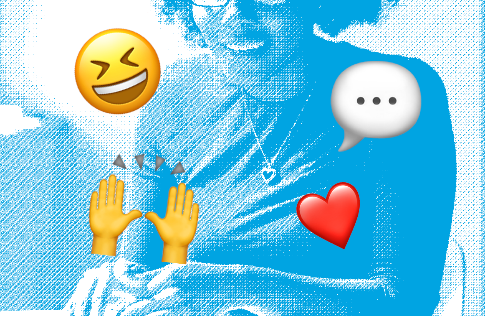

The creation of smart phones and social media have provided us with excellent ways to communicate with each other remotely. However, the over-usage of such methods can distract us from forming real life connections and impact our abilities to socialise. That is why it is important to nurture your real life connections by spending time communicating face-to-face, whether that is with your family, friends, or total strangers!
Stands for "Hit Me Up", a request for contact or invitation. This campaign aims to promote healthy communication to the young generation through the balance between online and face-to-face communication.
